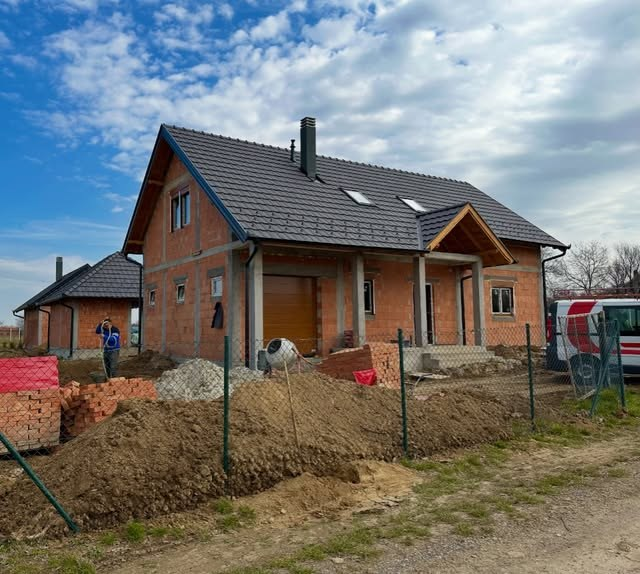
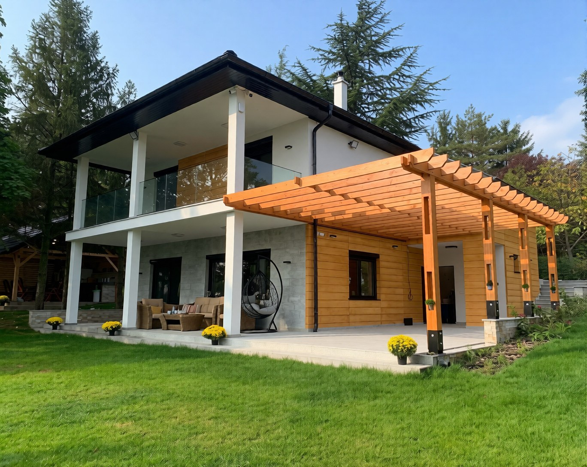
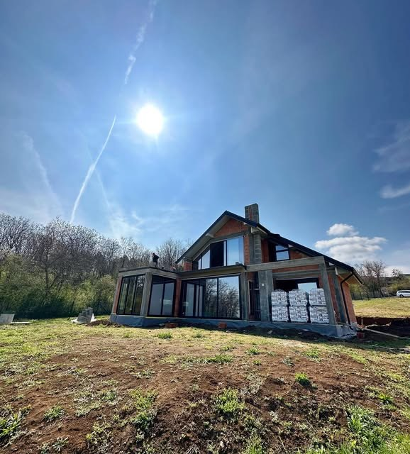
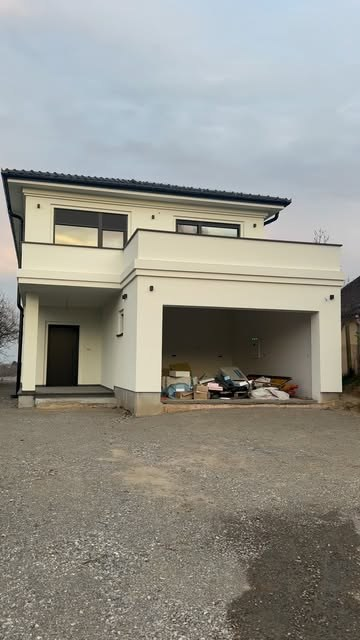
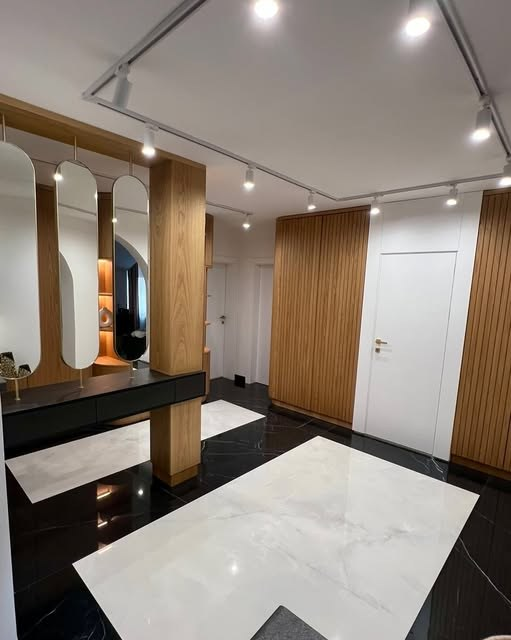
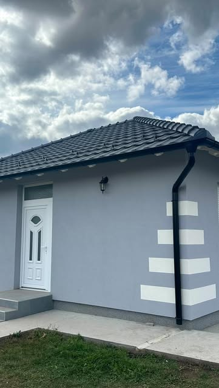
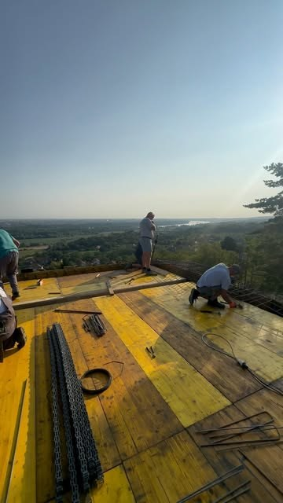
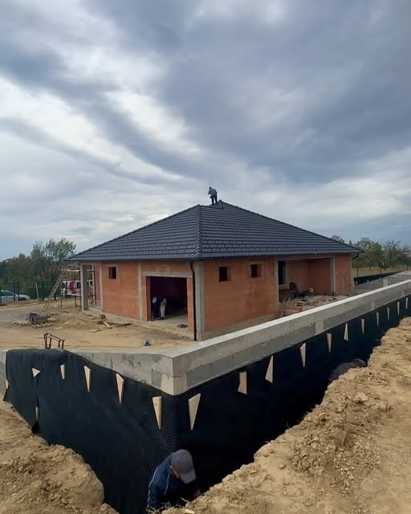

Gradnja ključ u ruke



Porodična firma koja radi od 1994. godine. Projektujemo, gradimo i predajemo useljivu kuću. Jedan tim vodi posao od temelja do ključa, umesto da vi koordinirate pet različitih majstora.
Zatražite procenu bez obaveze
Projektni biro Koš radi od 1994. godine. Projektujemo i izvodimo radove na porodičnim kućama, stanovima i poslovnim prostorima u Novom Sadu, na Fruškoj gori i širom Vojvodine. Posao vodimo od prve skice do trenutka kada uzmete ključ.
Pogledajte šta radimo
1994.
Godina osnivanja, porodična firma
Ključ u ruke
Od temelja do useljenja, jedan izvođač
Novi Sad
Fruška gora, Srbobran i cela Vojvodina



Projektovanje, gradnja i završni radovi pod istim krovom. Zidamo termo blokom, pokrivamo Wienerberger i Tondach crepom i ugrađujemo PVC i aluminijumsku stolariju.

Radimo u Novom Sadu, na Fruškoj gori, u Srbobranu i okolini. Vodimo gradilište umesto vas, tako da imate jednog sagovornika od prvog izlaska na teren do primopredaje.
Kuća sa velikim staklenim površinama okrenutim ka padini. Odradili smo sivu fazu, krov i ugradnju stolarije, pa smo nastavili do useljenja.
Zatražite istoPriprema gornje betonske ploče na projektu u Rakovcu. Naša ekipa je na gradilištu svakog dana, tako da niko ne čeka na majstora koji se nije pojavio.
Zatražite isto
Kompletna adaptacija stana, od rušenja do useljenja. Rasveta, keramika, stolarija i završna obrada odrađeni su kroz jedan ugovor i jedan rok.
Zatražite isto
Porodična firma koja radi od 1994. godine
32 god
Zakažite izlazak na terenOno što ugrađujemo u krov, zidove i otvore
Wienerberger
Pitajte za materijaleIzlazimo na teren, gledamo plac i vaše ideje, pa radimo projekat i dinamiku radova. Cenu dobijate u pisanoj formi, bez obaveze.
Naša ekipa radi temelje, sivu fazu, krov i stolariju. Gradilište vodimo mi, a vi dobijate izveštaj o tome dokle se stiglo.
Malterisanje, keramika, enterijer i čišćenje. Kuću predajemo useljivu, sa uređenim prilazom i pospremljenim gradilištem.
Naš cilj je da svaka kuća koju gradimo bude sinonim za kvalitet, sigurnost i udobnost. Od temelja do krova, tu smo da vašu viziju pretvorimo u stvarnost.
Gradilište danas, dom sutra. Naš tim vodi računa o svakom koraku, od temelja do završnih radova.
2,7 hiljada
Pratilaca na Instagramu
Planirate renoviranje stana, kuće ili poslovnog prostora? Potrebno vam je projektovanje enterijera? Mi smo tu za vas. Stvaramo savršen prostor baš za vas, a ako i vi imate želju da ulepšate i maksimalno iskoristite svoj prostor, javite nam se. Radimo izvođenje po sistemu ključ u ruke, projektovanje adaptacije i projektovanje enterijera.
Preuzimamo posao od projekta do useljive kuće. To znači temelje, sivu fazu, krov, stolariju, instalacije, malterisanje i završne radove. Vi imate jednog izvođača, jedan ugovor i jednu dinamiku umesto pet zanatlija koje sami morate da usklađujete.
Firma je registrovana u Srbobranu, a najveći deo gradilišta nam je u Novom Sadu i na Fruškoj gori, u mestima kao što su Banstol i Rakovac. Radimo i šire po Vojvodini, pa nas slobodno pozovite i ako niste iz Novog Sada.
Radimo. Adaptacije stanova, kuća i kupatila su veliki deo našeg posla, kao i projektovanje enterijera. Isti princip važi i tu: jedan tim vodi posao od rušenja do useljenja.
Cena zavisi od kvadrature, izbora materijala i toga dokle ide naš deo posla. Zato prvo izlazimo na teren, vidimo plac ili prostor i čujemo šta vam treba, pa tek onda dajemo procenu. Izlazak i procena su bez obaveze.
Novi Sad
Siva faza, krov i hidroizolacija temelja
Adaptacija
Kompletna adaptacija stana i enterijer